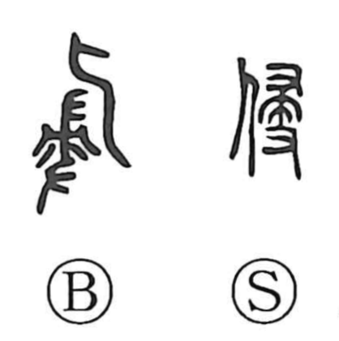

侵

Uncategorized
Kun: okasu | On: shin
invade ・ violate ・ infringe ・ harm
Explanation
侵 is a phono-semantic character. The ancient graphic evokes a ritual scene: a hand holds a broom that has been sprinkled with fragrant liquor, and the sweeping purifies and exorcizes the main hall of a mausoleum. The element seen also in 浸 serves as the phonetic, giving the on reading shin and suggesting the idea of a scent or liquid gradually soaking in—hence 浸 describes the fragrance permeating the purified hall. Applied to a person, this notion of penetration becomes 侵, the fragrance (and by extension an influence) entering the body, which led to the senses “to invade, violate” and “to harm.”